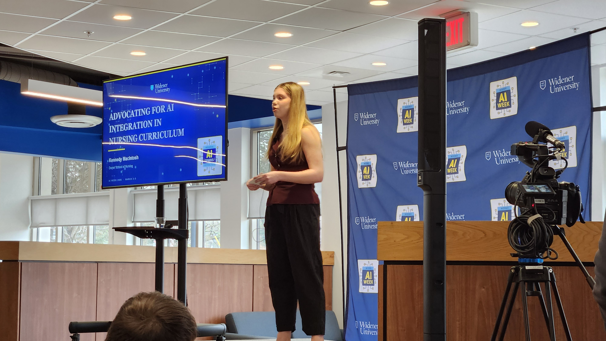
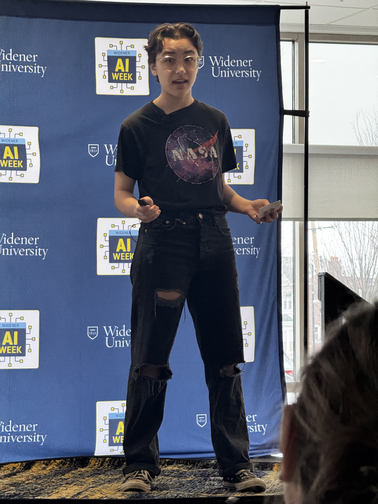
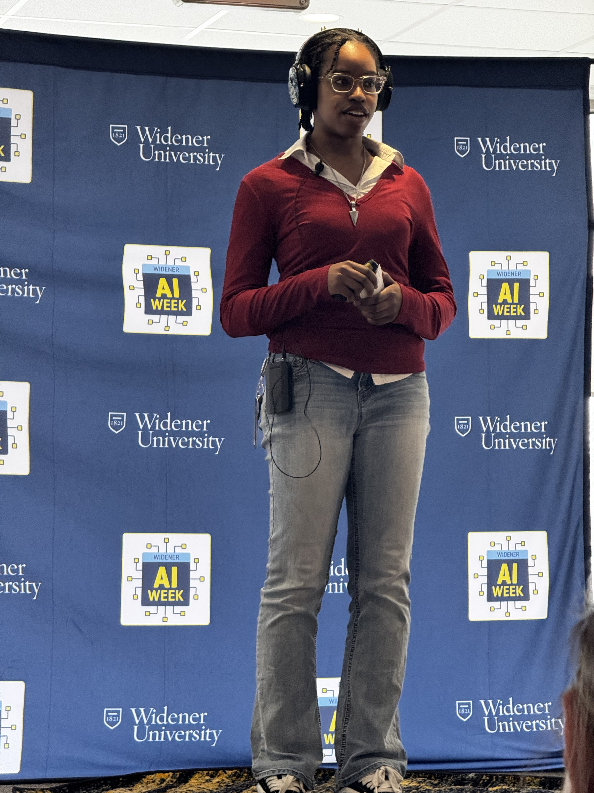

Widener AI Sparks brought together six speakers from across the campus community—students, a clinical faculty member, and a librarian—for a fast-paced lightning talk showcase in Harris Commons. Each speaker had exactly eight minutes to share one clear idea: an AI win, a hard lesson, a real concern, or a strategy worth spreading.
The event drew more than 120 attendees and generated overwhelmingly positive feedback. Multiple attendees described it as "one of the best events I've attended at Widener," and praised the balance of critical and practical perspectives, the diversity of speakers, and the tight, well-paced format. Two student videographers captured the full program.
The vast majority of respondents rated the event 5 out of 5. Feedback consistently highlighted the variety of speaker perspectives, the tight format, and the concrete takeaways from each talk.


Talks ranged from media literacy to clinical simulation to personalized AI tutoring—balancing critical and practical angles.
Dorsett opened the event with a timely, practical talk on AI-generated media detection, drawing a critical distinction between misinformation (inaccurate content without intent) and disinformation (false content deployed deliberately). Sharing that she doesn't like it when you mess with her mom (!), Dorsett used a AI-generated viral video her mom shared to demonstrate the telltale artifacts that can help a careful observer identify synthetic content. She grounded the talk by rebutting the increasingly common attitude that quality alone is sufficient justification for undisclosed AI use and provided a framework for guarding against it.
Morishita offered a student's perspective on the educational risks of AI dependency, structured around two extremes: classrooms that ban AI entirely versus classrooms that require it without scaffolding. Neither extreme, they argued, serves students well. Their thesis called for building genuine understanding before reaching for AI—not as a restriction on tool use, but as a precondition for using AI meaningfully. Morishita connected this to a pattern many of us recognize: the temptation to use AI to skip the productive struggle that produces real learning.
Thompson examined a policy vacuum around AI at Widener. Searching the relevant sources, she found that only the Academic Integrity policy references AI-use, and that it leaves it up to the discretion of the instructor. Thompson argued that the proliferation of AI in ed tech demands well-informed policy from the higher ed institutions providing guidance to both faculty and students on how to use these tools with integrity. Such a policy is necessary to maintain trust in the educational system.
Sweet presented an innovative clinical education application: using AI agents as standardized patients to help health professions students practice therapeutic communication and clinical empathy. Traditional programs are limited by the availability of trained standardized patients and simulation resources. Sweet demonstrated how AI-powered patient simulations expand the number and variety of practice encounters, allowing students to develop—and fail safely—in controlled, repeatable interactions. Crucially, she framed the goal not as replacing human empathy but as building it through deliberate practice. Attendee feedback specifically cited this talk as inspiring new ideas for simulation curriculum design.
Keating introduced MyPLT—a custom AI prompt he developed that transforms a general-purpose AI into a Socratic learning tutor. The MyPLT prompt instructs the AI to analyze course materials and student notes, but to withhold direct answers—instead asking clarifying questions, generating flashcards, posing practice problems, and guiding students toward understanding through their own reasoning. He presented a compelling before-and-after: without MyPLT, AI shortcuts lead to poor exam performance and superficial understanding; with MyPLT, students engage in genuinely guided learning that deepens comprehension and builds independence. He also articulated benefits for faculty: a tutoring tool aligned to course objectives that reduces academic integrity concerns.
MacIntosh closed the program with a call to action: AI integration in nursing education is not a luxury but a professional necessity. Nursing students will enter a healthcare system already shaped by AI-assisted diagnostics, documentation tools, and clinical decision support. Preparing them to use these tools critically and competently is a core educational responsibility. She acknowledged the legitimate concerns about AI in high-stakes clinical settings—patient safety, accuracy, accountability—while arguing that the answer is education, not avoidance. Her talk modeled the posture she was advocating: courageous engagement with difficult questions rather than retreat from them.
"WOW! An incredible event! I was impressed with the students' reflections and suggestions… This was one of the best events I've attended at Widener!"
"Engaging, energizing event with insightful presentations. The topics and timing of each talk struck a great balance between variety and novelty."
"We have students thinking critically about AI. It made me very happy."
"We need to learn to live with the tensions that AI brings us, even as we work through both the opportunities and the challenges."
"The SLP training presentation made me think about simulations I could design and offer in my own classes."
"It was a really nice balance of critical and enthusiastic about AI. The student perspective was really interesting—we don't hear that enough in spaces like this."